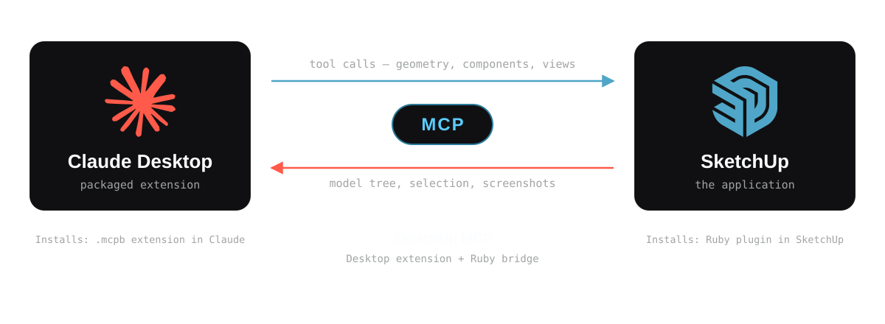

Connect SketchUp to Claude
A one-click Claude Desktop extension plus a Ruby bridge inside SketchUp. Genuinely well documented and actively developed — and young enough that you should read the maturity note before you install it.

SketchUp has no first-party MCP integration. What exists is community work, and the one covered here — 2ez4gcx/sketchup-mcp — is the best-documented option we found: a packaged Claude Desktop extension, a Ruby bridge that installs itself, and 36 tools including quantity takeoff.
Read the maturity note below before you install it on anything that matters.
Read What MCP actually is first if this is your first server.
Maturity — read this first
We would rather be straight about this than have you find out later.
| Maintainer | One person |
| Stars / forks | 8 / 0 |
| Commits | 15 |
| Licence | MIT |
| Last release | v1.5.0, the day before this guide was written |
| Tested on | SketchUp 2023, Windows, per the release page |
| Not tested | macOS, SketchUp 2017–2022 |
| Signed? | No. Neither the extension nor the Ruby plugin is code-signed |
So: actively developed, well documented, and very young. It is not abandoned — there was a release yesterday — but it has almost no independent usage behind it, and no one else has reviewed the code in anger.
Our read: fine for exploratory work on a copy of a model. Not something to put in a production workflow yet, and not something to install on a locked-down machine where unsigned extensions are a policy problem.
What you need
- SketchUp 2017 or later (README), though the release page states testing was on SketchUp 2023 on Windows only.
- Claude Desktop, current enough to have Settings → Extensions.
- For Claude Code instead: Node.js 18+ on your
PATH.
Microsoft Store Claude Desktop: double-clicking a .mcpb will not open it. Install through Settings instead.
Step 1 — install the Claude Desktop extension
- Download
sketchup-mcp-1.5.0.mcpbfrom the releases page. Check for a newer version rather than taking that filename as current. - In Claude Desktop, open Settings → Extensions.
- Either drag the
.mcpbinto the window, or click Advanced settings → Install Extension… and pick the file. - Click Install.
The build is not code-signed, so Claude Desktop may warn you that it is unsigned. That warning is accurate; decide accordingly.
Settings live at Settings → Extensions → SketchUp MCP → Configure — port (default 9876) and per-command timeout (default 120 s).
Step 2 — install the Ruby bridge in SketchUp
The easy way. In a new chat:
Install SU MCP Bridge in SketchUp
Claude calls install_sketchup_bridge — click Allow. It copies the files into the Plugins folder of every SketchUp version that has been opened at least once, and reports what it changed. It supports a dry run if you want to see what it would do first.
The manual way. Download su_mcp-1.5.0.rbz from the same releases page, then in SketchUp: Extensions → Extension Manager → Install Extension, and select the .rbz. (SketchUp 2017–2020: Window → Extension Manager.)
Note: the README's instructions say su_mcp.rbz while the release asset is named su_mcp-1.5.0.rbz. Same file, inconsistent naming.
If SketchUp refuses to load it, the Extension Manager gear icon has an Extension Loading Policy — setting it to Approve Unidentified Extensions allows unsigned plugins, if your IT policy permits that. It may well not, and that is a reasonable policy.
Then fully quit SketchUp and reopen it.
Step 3 (alternative) — Claude Code
The .mcpb is a zip. Extract it, then register the Node server:
tar -xf sketchup-mcp-1.5.0.mcpb -C C:\Tools\sketchup-mcpUse Windows tar — Git Bash's tar cannot read it. Or rename the file to .zip and use Extract All.
claude mcp add sketchup --scope user -e SKETCHUP_MCP_TIMEOUT=120 -- node C:/Tools/sketchup-mcp/server/index.mjsclaude mcp listThe server name goes before -e. Use --scope project to write a shared .mcp.json instead of a user-level entry.
Environment variables: SKETCHUP_MCP_PORT (default 9876), SKETCHUP_MCP_TIMEOUT (default 120).
Checking it worked
In SketchUp: Extensions → SU MCP Bridge → Status should read
SU MCP Bridge v1.5.0: RUNNING on 127.0.0.1:9876In Claude:
Ping SketchUp
No warning line means both halves are on matching versions.
What it can do
36 tools, in five groups:
- Read and statistics (10) —
model_info,list_tags,list_components,list_materials,selection_info,quantity_takeoff,interior_takeoff,check_model,check_design,ping. - Modelling and editing (15) —
create_box,create_shape,create_lines,insert_component,insert_furniture,transform_entities,set_material,set_tag,setup_tags,make_group,create_room,purge_unused,delete_entities,select_entities,undo. - Views, images and files (9) —
set_view,create_scenes,screenshot,export_png,export_file,export_for_render,save_model,open_model,new_model. - Ruby scripting (1) —
run_ruby. - Setup (1) —
install_sketchup_bridge.
The read-and-statistics group is the interesting half for architectural work. quantity_takeoff and check_model are read-only and genuinely useful, and screenshot lets Claude see what it has done rather than guessing.
Each edit lands as a single Undo step named MCP: …, which is a thoughtful touch and makes backing out one operation straightforward.
Security
run_ruby executes arbitrary Ruby inside SketchUp, with your user's permissions and no time limit. There is no setting to disable it. The only off switch is Extensions → SU MCP Bridge → Stop server, which lasts for the current session.
So the control you have is Claude's own tool approvals. The README lists the tools it says you should not mark "Always allow":
run_ruby,delete_entities,undo,save_model,open_model,new_model,export_file,export_png,export_for_render,interior_takeoff(when it writes a CSV),purge_unused,create_scenes
Take that list seriously, and add the geometry-editing tools to it on any model you care about.
Two more:
- The socket has no authentication. It binds to
127.0.0.1only, so other machines cannot reach it — but any program running on the same computer can send commands while the bridge is running. save_modelwithout a path overwrites the file. On a model you have not copied, that is the whole guide in one line.
Troubleshooting
| Symptom | Cause |
|---|---|
| Cannot connect to 127.0.0.1:9876 | SketchUp not open, bridge not installed, or Status shows STOPPED — click Start server. |
| Every tool appears twice | An older sketchup entry is still in claude_desktop_config.json. Remove it via Settings → Developer → Edit Config. |
| "Port 9876 is used by another SketchUp window" | Two SketchUp windows are open. Claude controls the first. |
| "Windows does not allow port 9876" | Reserved-range clash. Use Extensions → SU MCP Bridge → Change port…, set the same port in Claude's Configure, restart SketchUp. |
| Ping warns the bridge is older | Version mismatch. Install the new .mcpb, re-run install_sketchup_bridge, restart SketchUp. Always update both halves. |
| A command timed out | The README is explicit: a timed-out editing command may have already run. Check the model — do not just repeat it. |
| SketchUp frozen | run_ruby has no time limit, so an infinite loop will hang it. |
Working with it sensibly
Work on a copy. Every integration in these guides gets this advice; here it carries extra weight, because save_model can overwrite in place and run_ruby has no time limit.
The read-only tools — model info, takeoffs, checks, screenshots — are where the value is and they carry none of that risk. If you want to try this out, start by asking it to tell you things about a model rather than change them. That is a genuinely useful afternoon and it cannot cost you anything.